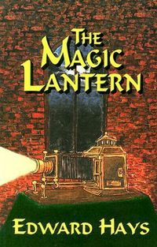

Magic Lantern: A Mystical Murder Mystery
An interesting spiritual journey with lots of possible hidden meaning, but the writing was...
Download or read Magic Lantern: A Mystical Murder Mystery in PDF formats. You may also find other subjects related with Magic Lantern: A Mystical Murder Mystery.
- Filetype: PDF
- Pages: 224 pages
- ISBN: 9780939516155 / 939516152
ByQtxcJl0idb.pdf
More About Magic Lantern: A Mystical Murder Mystery
An interesting spiritual journey with lots of possible hidden meaning, but the writing was rather sophmoric at best--just not very gripping. There was enough there that I may pick up others in the series at some point. Maybe not on par with "The Shack", but it is nice to have options in the fiction-spirituality genre.